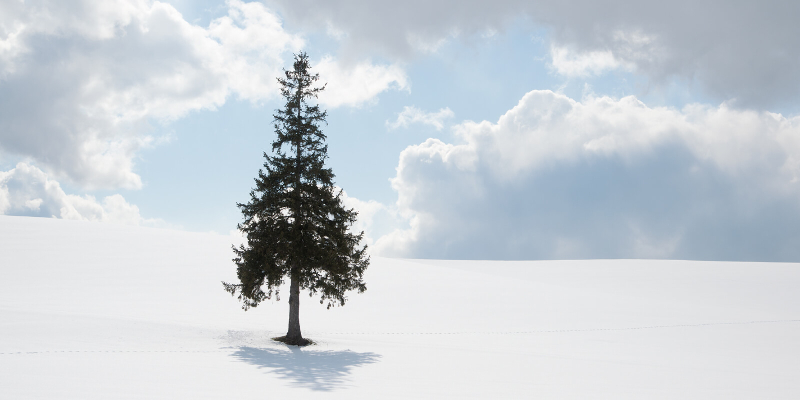

JAPAN · WINTER ESCAPE
홋카이도
눈 내리는 풍경, 따뜻한 온천의 하루
좋은 점
- 비에이·오타루·삿포로 등 겨울 설경과 도시 관광을 함께 즐길 수 있습니다.
- 온천·대욕장 등 겨울철 휴식에 어울리는 숙박 선택지가 있습니다.
- 일본 음식과 비교적 정돈된 여행 인프라가 매력적입니다.
고려할 점
- 한파, 눈길, 강풍 등 겨울 날씨에 대비해야 합니다.
- 설경 관광지 간 이동이 길거나 날씨에 따라 일정이 달라질 수 있습니다.
- 관광 코스와 숙박 조건에 따라 여행 경비 차이가 큽니다.
기존 홋카이도 28개 자료 기반 비교 사이트로 이동